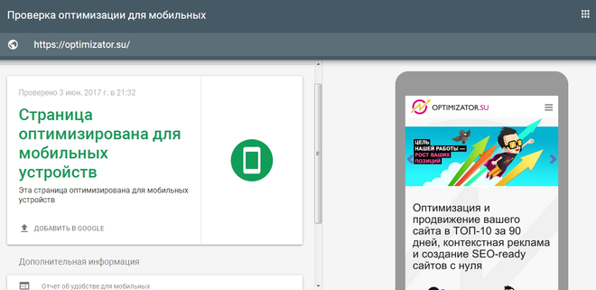
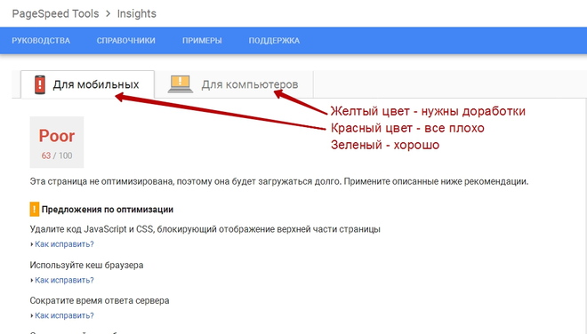
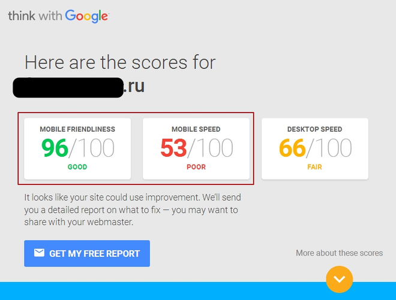
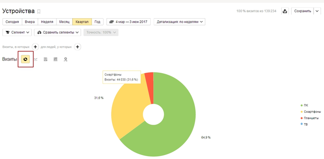
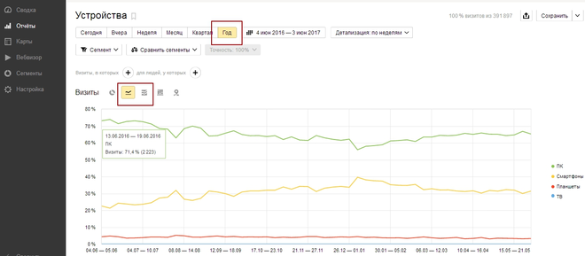

Наверняка вы уже слышали, что мобильная оптимизация сайта влияет на скорость и эффективность продвижения в mobile-сегменте, привлекает новых клиентов, заказчиков и покупателей.
Трафик мобильных устройств в Рунете на 2017г. по данным Digital Report составляет 75%, а в 2018г. повысится до 79%.
Без специальной подготовки и оптимизации мобильного сайта вы уже сегодня теряете сотни и тысячи целевых посетителей — клиентов, которые способны приносить прибыль.
Процентное соотношение мобильных пользователей для разных рыночных ниш и сегментов варьируется, но имеет общую тенденцию роста.
Мобильная оптимизация сайта: 5 бесплатных тестов
Проведите самостоятельную проверку своего интернет-магазина, сайта-продажника или landing page, чтобы определить:
Мобильная оптимизация сайта входит в стандартный комплекс услуг нашей компании «ОПТИМИЗАТОР».
Мы одновременно работаем с десктопной и mobile (адаптивной) версией, чтобы по максимуму раскрутить сайт или интернет-магазин в ТОП-10, привести к вам покупателей.
Закажите бесплатную консультацию и узнайте, сколько стоит подготовка вашего сайта или магазина к мобильным продажам:
1. ТЕСТ-ПРОВЕРКА ОТ GOOGLE
В Google Developers (для разработчиков) есть бесплатный online-инструмент, с помощью которого проверяется степень mobile-оптимизации сайта, лендинга или интернет-магазина.
Сервис тестирует «Mobile-Friendly» качества web-ресурса по ряду параметров и доступен по ссылке: https://search.google.com/search-console/mobile-friendly

Как видите, наш сайт optimizator.su идеально оптимизирован для мобильных телефонов и планшетов. А какие результаты у вас?
Если сервис показал много ошибок, задумайтесь о заказе мобильной оптимизации сайта. Чем быстрее исправить ошибки, тем больше финансов вы сэкономите.
2. ТЕСТ СКОРОСТИ МОБИЛЬНОЙ ОПТИМИЗИРОВАННОЙ ВЕРСИИ САЙТА
Бесплатный инструмент Google PageSpeed Insights за пару секунд оценит скорость вашего сайта для десктопных и mobile-устройств. Оценка направлена на технические характеристики, замедляющие работу проекта.
Скорость сайта важна для продвижения в Google и Яндекс. Чем дольше посетители ждут загрузки страниц сайта или магазина, тем выше вероятность, что люди уйдут к конкурентам. Медленные веб-проекты также имеют плохие поведенческие показатели, много отказов.
Мобильная оптимизация сайта воздействует на скорость mobile или адаптивной версии и повышает результаты тестирований. Проверьте самостоятельно – нужна вам оптимизация мобильного сайта по скорости или можно обойтись без нее?
Ссылка на инструмент: https://developers.google.com/speed/pagespeed/insights/
Ниже представлен скриншот оценки скорости онлайн-магазина наших клиентов ДО оптимизации их мобильного сайта:

Обратите внимание на цвета 2-х вкладок и численные показатели. Максимальное значение – 100 балов. Оценка «Для мобильных» 63/100 – плохо (Poor) – срочно нужны доработки и правки. Чуть ниже – рекомендации Google, что и как можно улучшить:
Эти действия выполняются самостоятельно или с помощью услуг разработчиков. По заказу наша команда легко ускорит и оптимизирует ваш сайт под мобильные переходы.
3. КОМПЛЕКСНОЕ ТЕСТИРОВАНИЕ TEST MY SITE
Следующий бесплатный сервис online - «Test My Site». Он показывает суммарную оценку мобильной оптимизации сайта и скорость компьютерной полной версии.
Ссылка на сервис: https://testmysite.thinkwithgoogle.com

Степень оптимизации мобильного сайта отображается в 2-х параметрах:
В примере выше протестированный сайт 100% нуждается в мобильной оптимизации скорости. Зато с адаптивностью (удобством) все хорошо. На скриншоте видно, что проекту также требуется ускорение десктопной версии (Desktop Speed – 66/100).
Если тест покажет «красные» или «желтые» цифры в отчете, срочно исправьте ошибки.
4. ПРОЦЕНТ MOBILE-ТРАФИКА
Мобильная оптимизация сайта нужна, если ваш веб-ресурс суммарно получает свыше 10% мобильного трафика. Клиенты заходят с планшетов и телефонов на вашу площадку, но насколько вы подготовлены к этим визитам?
Посмотреть текущий процент mobile-трафика можно в статистике Яндекс.Метрики:
Отчеты -> Стандартные отчеты -> Технологии -> Устройства

В этом примере квартального отчета 64,9% общего трафика приходится на ПК (десктопные персональные компьютеры), а остальные 35,1% - это мобильные переходы:
Если mobile-трафик более 10%, то мобильная оптимизация сайта в результате повысит продажи. Но полное отсутствие мобильных визитов – проблема...
Нулевой mobile-трафик свидетельствует о серьезных ошибках. Вероятно ваш web-проект:
4. ТЕНДЕНЦИИ К РОСТУ МОБИЛЬНОГО ТРАФИКА
Чтобы оценить тенденции роста mobile-визитов с течением времени и на перспективу, нужно слегка перестроить отчет Яндекс.Метрики.
Выберите на той же странице отчета период – «ГОД» и отображение – «Линии» или «Области»:

На картинке веб-трафик ПК снижается, а переходов со смартфонов становится больше. Если у вас похожая картина, заказывайте оптимизацию и привлекайте больше mobile-посетителей. Зарабатывайте на мобильных продажах уже сейчас, пока этого не сделали конкуренты.
Учтите, что конкуренты не спят!
Если конкурентные сайты лучше подготовлены к мобильным визитам, заточены под mobile-трафик, удобны и быстры в эксплуатации, вы теряете клиентов и деньги. Даже 10% мобильного трафика – существенная коммерческая величина, которой нельзя пренебрегать.
Мобильная оптимизация сайта даст дополнительный потенциал и конкурентное преимущество для покорения mobile-сегмента рынка в вашей тематической нише.
5. АУДИТ МОБИЛЬНОЙ ОПТИМИЗАЦИИ САЙТА
Самый простой способ проверить ваш веб-ресурс на готовность к mobile-визитам – заказать аудит в нашей компании «ОПТИМИЗАТОР». В этом случае вы:
За 2 дня мы глубинно, всесторонне и профессионально проверим все параметры вашей продающей цепочки, включая mobile-версию и статистику трафика. Составим детальный и поэтапный отчет с перечнем советов наших лучших веб-разработчиков.
Из чего состоит мобильная оптимизация сайта
1. РАБОТА С КЛЮЧЕВЫМИ СЛОВАМИ
С телефонов часто вводят короткие (клавиатура) или очень длинные (голосовой набор) фразы, и это нужно учитывать. Семантическое ядро корректируется под mobilе-версию!
2. ОФОРМЛЕНИЕ
Все лишнее удаляется. Оптимизация мобильного сайта ограничивает или адаптирует область просмотра, чтобы вместить важные элементы страниц в небольшие экраны. Оптимизации подлежат:
3. УСКОРЕНИЕ
Скорость мобильного интернета сотовых операторов оставляет желать лучшего. Если сайт тормозит и грузится дольше 2-3 секунд, посетители уйдут к конкурентам. Поэтому важно ускорить работу ресурса.
4. ГЕО-ПАРАМЕТРЫ
Поисковые системы в mobile-выдаче для платформ Android и iOS учитывают ГЕО-локацию, показывают пользователям ближайшие предложения по их региону. Мобильная оптимизация сайта невозможна без настройки GEO-параметров.
Как минимум, нужно добавить проект в популярные ГЕО-сервисы, справочные службы Яндекса и местные карты типа 2GIS.
5. ОШИБКИ И РЕКОМЕНДАЦИИ
Недочеты мешают нормальной работе, снижают посещаемость и доход. Удаление ошибок – важный этап оптимизации сайта под мобильные устройства и гаджеты.
6. MOBILE-ЮЗАБИЛИТИ
Нужно определить, насколько удобен ваш бизнес-проект при открытии с мобильных устройств. Для приема и обслуживания mobile-клиентов есть только 2 решения:
− Адаптивная верстка (дизайн автоматически подстраивается под разные экраны гаджетов) или...
− Специальная версия сайта (mobile-версия создается на поддомене и серьезно отличается от основного ресурса упрощенным функционалом, особым меню, дизайном).
Сможете ли вы проделать эту работу своими силами без профессиональной помощи? Как долго еще будете терять мобильных клиентов и долю рынка? Почему прямо сейчас не исправите ситуацию и не закажете мобильную оптимизацию сайта?
Ведь это не очень дорого, а все расходы окупятся в ближайшие 2-3 месяца. Жмите кнопку «Заказать» и вперед – к высоким продажам!
�